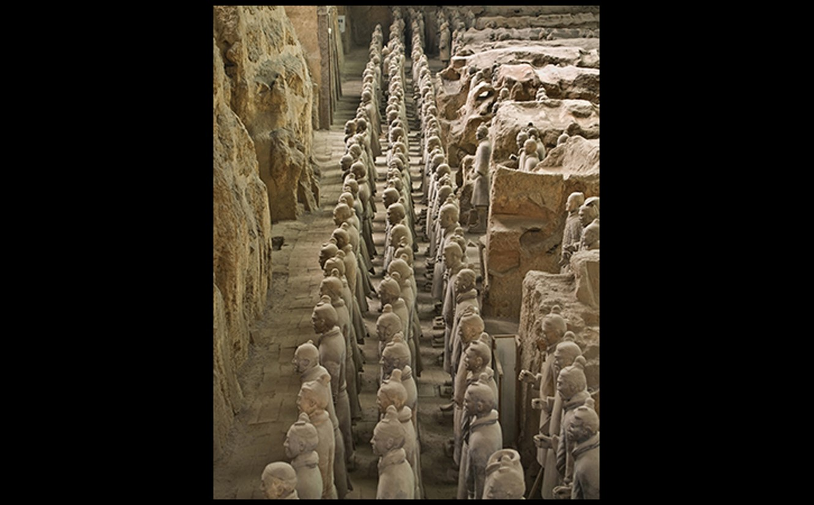

Terra Cotta Warriors The size, scale, and the character of composition of the Terra Cotta Warriors all work together to provide impressions of technological prowess and naturalism. Emperor Shihuangdi seemed to have an endless appetite for accomplishing seemingly impossible feats in his lifetime before he passed away. He wanted to continue this attitude even in death. The uniqueness of each warrior, as well as the amount of soldiers all unified in proper military attire and positioning proves the level of influence and technological power of Emperor Shihuangdi. Furthermore, the attention to detail in each soldier is not only impressive but shows Emperor Shihuangdi’s naturalistic approach to this impressive creation. The Terra Cotta Warriors represent all that Emperor Shihuangdi was, both as an emperor and genius.
